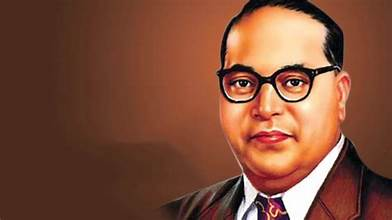

Dr. B. R. Ambedkar: A Champion of Equality and Social Justice

Timeline of Significant Events
- 1891: Born in Mhow, Madhya Pradesh, India.
- 1915: Graduates from Columbia University with a Master's degree in Economics.
- 1916: Earns a Doctorate in Economics from London School of Economics.
- 1924: Founds the Bahishkrit Hitakarini Sabha.
- 1927: Publishes the Annihilation of Caste, a scathing critique of the Hindu caste system.
- 1951: Chairs the Drafting Committee of the Indian Constitution.
- 1956: Passes away in Delhi, India.
Quotes and Insights
"Educate, Agitate, Organize."
"Without equality, liberty would become the privilege of a few."
"Be educated, be organized, be strong. Have faith in yourselves."